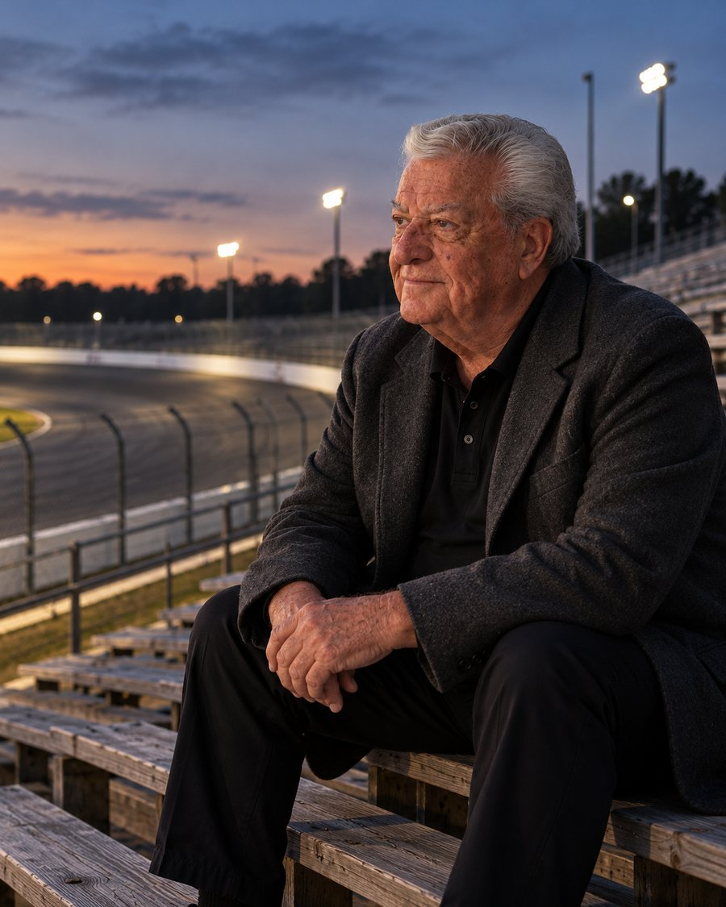
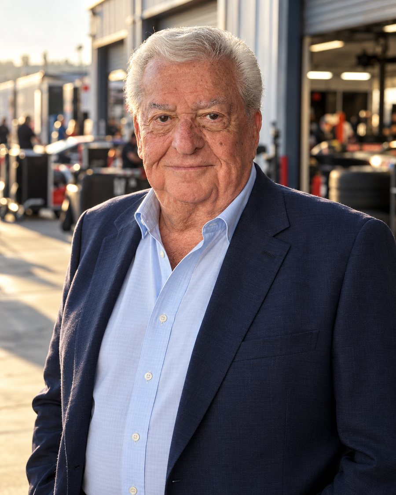
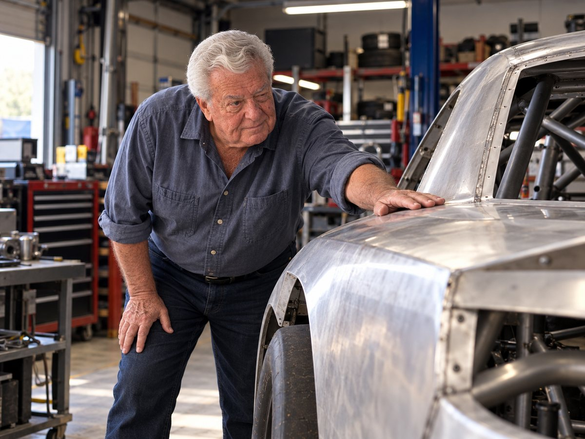
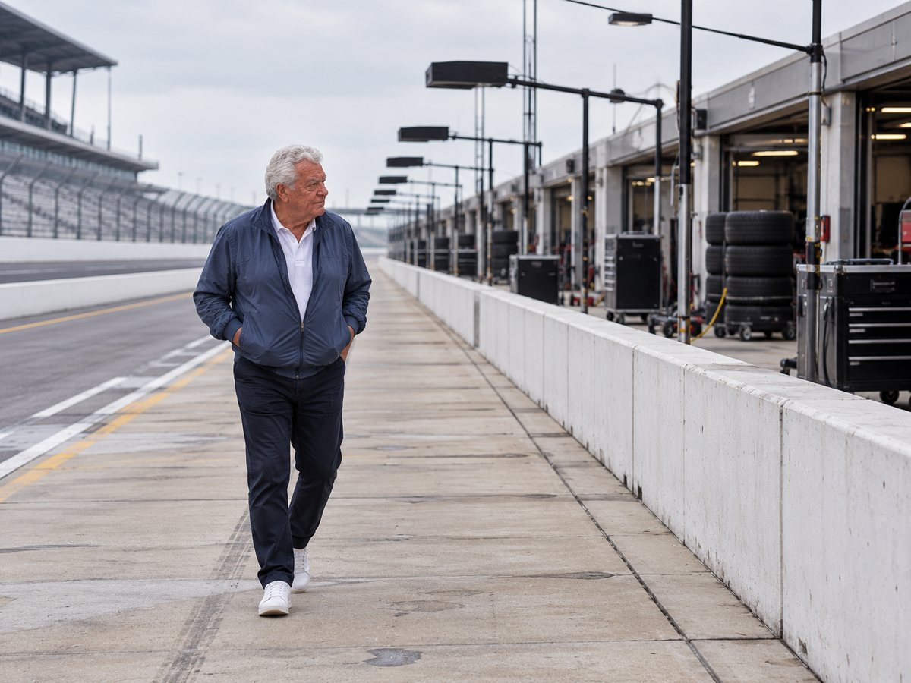
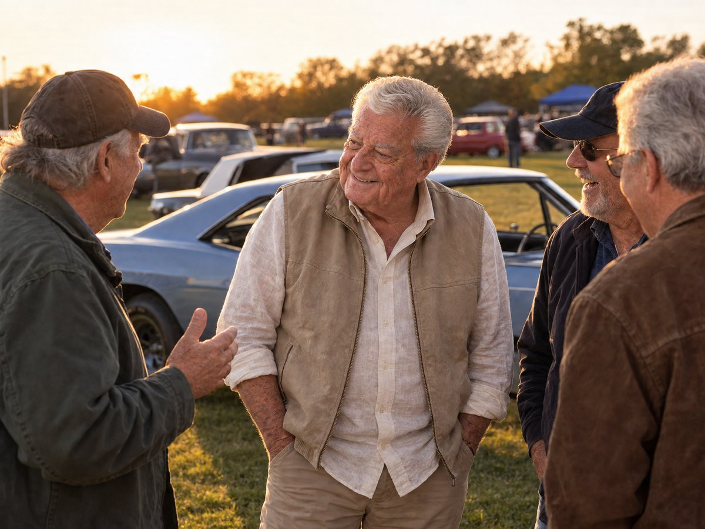

Four halls of fame, a Promoter of the Year award, nineteen racetracks, and the races I put in places that had never had one. This is the whole of it, set out in order.
Honors
Racing keeps its own history, and over time it put my name in four halls and on one wall.
None of it was the point. You do the work because the next race has to happen, and the recognition arrives later, from people who were in the same garages and press boxes you were.

Ken ClappNamed Promoter of the Year by the Motor Sports Press Association.
Inducted by the writers and broadcasters who had covered the sport alongside me.
At the track I worked on when it was still Sears Point.
The most recent of them, and the one from my own state.
Also inducted
1955
On the pit crew of the team that won the Pacific Coast Grand National title
19
Racetracks under California Auto Racing Speedways, up from twelve
2005
NASCAR's first event in Mexico, at the Autodromo Hermanos Rodriguez
The company
Before the NASCAR title there was a business to run, and it came with a dozen tracks attached.
By the end of 1977 I had bought operational control of Bob Barkhimer Associates and the twelve racetracks it ran. The company became California Auto Racing Speedways, and not long after that it was running nineteen.
Tracks are not a portfolio. Each one has a promoter, a schedule, a crowd that will come back or will not, and a town that either wants the noise or does not. Growing from twelve to nineteen meant seven more of those conversations going the right way.

1977
Where the races went
When Riverside's Cup dates had to move I arranged for them to go to Sonoma and to Phoenix, and both are still on the schedule. I led the negotiations that took the series to Japan, first to Suzuka and then to Twin Ring Motegi. In 2005 I helped bring it to the Autodromo Hermanos Rodriguez in Mexico City, the first NASCAR event held in Mexico.
At NASCAR
From 1977 to 1999 inside the sanctioning body, and two decades of consulting after that.
1977
Brought in by NASCAR to lead marketing across the western states.
1983
Named on 16 December. The job was the sport west of the Rockies: the tracks, the schedules and the people who ran them.
1996
A second title and a wider brief, and the years the Japanese races ran.
1999
Retired in February as senior vice president of marketing development, then consulted for the sport for the best part of two decades.

ServiceBoards and governance
A career in racing does not end at the fence. These are the boards I have sat on, and the hall I chair.
In 2009 I began voting on inductions to the NASCAR Hall of Fame, starting with its inaugural class in 2010.
Stock Car racing, particularly the West Series, has been a part of my life since I was in high school.Ken Clapp
The book
The long version of all of this runs to more than four hundred pages.
Written in 2022 with the racing historian Bones Bourcier. The proceeds go to charity.
Every picture of Mr. Clapp on this page is an AI generated illustration, produced with his approval from a reference photograph. They are not photographs of real events.